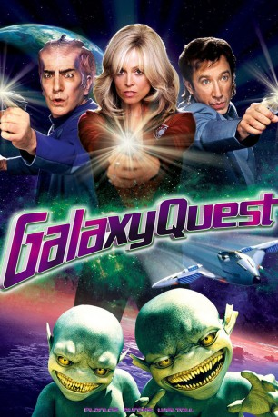

#2644 Galaxy Quest - Planlos durchs Weltall
Alternativ: Galaxy Quest
 
 IMDB-Wertung: 7.3 / 10
IMDB-Wertung: 7.3 / 10  Metascore: 70
Metascore: 70 
Die Besatzungsmitglieder der "NSEA Protector" waren Helden im TV-All. Vier Staffeln lang hat die Mannschaft der "Galaxy Quest" in fernen Galaxien für Recht und Ordnung gesorgt. Dann wurde sie ausgemustert. Heute, 20 Jahre nach Ende der Serie, treten fünf Ex-Crewmitglieder immer noch bei Fan-Conventions auf. Einige Fans sind überaus treu - die Thermianer vom Planeten Klatu Nebel zum Beispiel. Sie hielten die Serie nämlich für echt und wenden sich nun an Commander Taggart, damit er sie vor tödlichen Widersachern beschützt.
Jahr: 1999
Dauer: 102 Minuten
FSK: 12
Land: USA Studio: DreamWorks DistributionTonspuren: DTS - ,
Untertitel:
Auflösung: 1080p (1920x816) Größe: 7598 MB
Genre: Sci-Fi, Komödie, Abenteuer
Regisseur: Dean Parisot
Drehbuch: David Howard, David Howard, Robert Gordon
Soundtrack: David Newman
Darsteller:
 Tim Allen als Jason Nesmith
Tim Allen als Jason Nesmith Sigourney Weaver als Gwen DeMarco
Sigourney Weaver als Gwen DeMarco Alan Rickman als Alexander Dane
Alan Rickman als Alexander Dane Tony Shalhoub als Fred Kwan
Tony Shalhoub als Fred Kwan Sam Rockwell als Guy Fleegman
Sam Rockwell als Guy Fleegman- Daryl Mitchell als Tommy Webber
 Enrico Colantoni als Mathesar
Enrico Colantoni als Mathesar Robin Sachs als Sarris
Robin Sachs als Sarris Patrick Breen als Quellek
Patrick Breen als Quellek Missi Pyle als Laliari
Missi Pyle als Laliari- Jed Rees als Teb
 Justin Long als Brandon
Justin Long als Brandon Jeremy Howard als Kyle
Jeremy Howard als Kyle- Kaitlin Cullum als Katelyn
 Corbin Bleu als Young Tommy
Corbin Bleu als Young Tommy Wayne Pére als Lathe
Wayne Pére als Lathe- Sam Lloyd als Neru
- Bill Chott als Fan #1
- Morgan Rusler als Fan #2
 Gregg Binkley als Fan #3
Gregg Binkley als Fan #3- Jennifer Manley als Shy Girl
- Todd Giebenhain als Teen in the Bathroom #2
 J.P. Manoux als Excited Alien
J.P. Manoux als Excited Alien- Dan Gunther als Navigator
 Matt Winston als Technician #1
Matt Winston als Technician #1 Brandon Keener als Technician #2
Brandon Keener als Technician #2- Dian Bachar als Nervous Tech
 Rainn Wilson als Lahnk
Rainn Wilson als Lahnk Susan Egan als Teek , scenes deleted
Susan Egan als Teek , scenes deleted Isaac C. Singleton Jr. als Sarris' Guard
Isaac C. Singleton Jr. als Sarris' Guard- Jerry Penacoli als Reporter
 Joel McKinnon Miller als Warrior Alien
Joel McKinnon Miller als Warrior Alien Kevin McDonald als Announcer
Kevin McDonald als Announcer- Joseph J. Dawson als Mank'nar #1 in Prosthetics , uncredited
- David Dorfman als Boy , uncredited
 Janis Jones als Sci-Fi Convention Fan , uncredited
Janis Jones als Sci-Fi Convention Fan , uncredited- Danilo Mancinelli als Control Deck Thermian , uncredited
- Rocco Salata als Sarris Soldier , uncredited
- Jonathan Feyer als Hollister
- Brandon de Paul als Fan #4
- Paul G. Kubiak als Fan #5
- Gregory Colbrook als Fan #6
- John Patrick White als Teen in the Bathroom #1
- Heidi Swedberg als Brandon's Mom
- Daniel Parker als Alien Fan
- Dawn Hutchins als Inventory Clerk
- Joe Frank als Voice of the Computer
- Larry Richards als Thermian Greeter #1
- Mic Tomasi als Thermian Greeter #2
- Heath Castor als Convention Goer , uncredited
Datei: X:\1999\Galaxy Quest - Planlos durchs Weltall (1999, FSK12, 1920x816).mkv seit 30.11.2015
Festplatte: HD 1996-2002
 Es gibt insgesamt 81 Filme in der Gruppe '1999'
Es gibt insgesamt 81 Filme in der Gruppe '1999'